RM1 · why the Hub and the Station eat memory when left open
Alan, 7 Oct: "When I leave Scintilla open and the Station open, it takes a lot of RAM in Activity Monitor after a while. When I quit and come back, it's perfectly fine … especially on the iMac it's a problem."
Each page was left open in a test browser with no window (headless, on the MacBook, during the trading session, with live data) and measured every 5 minutes: the live page for 90 minutes, then the same page with this branch's files for 50 — those runs were stopped early, for the reason given under "What went wrong during the test". Nothing was deployed, no table was written, nothing opened on screen.
The short answer
Three things were being kept that should have been let go. Two are in the Hub and grow for as long as it stays open; one is in the Station and is a fixed weight that scales with the size of the screen, which is why the iMac feels it most. All three are fixed on the branches. Quitting made it "perfectly fine" because closing the page is the only thing that released them.
Hub · the news chime
Every time a favourite gets a headline the Hub rings a short chime, and for each chime it opened a new sound channel and never closed it. A browser never takes an open one back: each keeps a thread and its buffers until the page is closed. The feed-down alarm did the same.
In the 90-minute run the live Hub was holding 25 open channels at the end and its process was running 51 threads (the same page starts at 28); the branch's page was still at 28 threads when its run was stopped at minute 50. That is one every four minutes — each time the favourites had a fresh headline, plus one for the feed-down alarm — so up to about 360 a day.
Side by side for 10 minutes, counting every channel each page opened: live opened 2, closed 0, 2 still alive; the branch opened 2, closed 2, 0 still alive.
What one costs, measured on a blank page: 40 chimes left 40 channels alive after a forced clean-up — about 1.1–1.2 threads and 1–2 MB each, and together 10–11% of one processor core while silent. Closed as each note ends, all of it came back.
Hub index.html, chime() (line 27107 on live b80c01e) and scAlert() (line 27394). Fix: scAudioDone() closes the channel when the note ends.
Hub · the news lists
A news list read from the server holds the newest 120 headlines. But every headline that arrived live was added to every list that had ever been opened, and nothing was ever taken off.
Measured: the news table gained 5,788 headlines in the last 24 hours (8,726 the day before; 1,765 of them for the FAVORITES names). Each arrival re-sorted the whole list, and with the NEWS room on screen each one redrew every headline in it.
Side by side with the NEWS room open on ALL: in 14 minutes the live list went 120 → 293 headlines (741 an hour) and the pieces of the page drawing it from 982 to 2,542; the branch's stayed at 120.
Now a list stays the newest 120, in the same order a fresh read gives — so nothing you see changes, it just stops growing.
Hub index.html, the live-news handler (line 26953 on live b80c01e). Fix: newsCachePush().
Station · a copy of every chart's picture
To find an empty spot for the little context lens, each chart takes a full copy of its own picture (4 bytes for every pixel) — and then kept that copy until its next repaint. A parked chart never repaints, so it kept its copy for as long as it stayed parked.
Measured on the live Station at 1680 wide: 9.8 MB for each two-up chart, 2.4 MB for each eight-up one — ten charts held 53.7 of the page's 54.9 MB of buffers. The copy grows with the screen, so it is larger on the iMac.
Now the copy is handed back the moment the lens has its place: buffers fell from 40 MB to 8 MB on average over the 90 minutes. Side by side at the same moment on an eight-chart wall: live 42.5 MB, branch 8.4 MB, and the lens in exactly the same place on 8 of 8 charts.
Station _indicators/lens-placement.mjs inkReader() (line 452) and _indicators/station-lens.mjs (line 566). The Hub's company chart is the same pane, so it gains too.
What was looked for and not found, so it is not guessed at later: timers and listeners do not pile up on either page (the counts below are flat lines); pieces of the page are not kept after they leave the screen; and clicking around the Hub leaves nothing behind — 8 laps through 5 companies, every room and 4 lists moved the page's memory from 44.1 MB to 44.3 MB.
What went wrong during the test
From about 10:50 to 11:22 ET the live prices on the Hub and the Station were failing, and this test most likely caused it. To finish inside the morning, the "after" runs were started while the "before" runs were still going, with two short side-by-side experiments on top — up to nine test pages reading live prices at once, about 250 to 270 price reads a minute from this Mac against about 100 from Alan's own screens. The price service stopped answering the quote read ("live price surface unavailable", a 20-second timeout) and its 15-minute frames fell 20 minutes behind. Other reads (candles, Geiger, macro) kept working.
What was done: every test page was stopped at 11:16 ET; a note went to the coordinator's handoffs and the observer's ledger at 11:22; nothing was restarted, redeployed or changed, by this lane or anyone — the machines' own records show no restart. The quote read answered again at 11:22 ET, six minutes after the test load came off. Since then it has answered, but not steadily. Watched with one light read every 30 to 45 seconds until 11:58 ET (49 reads; the log is data/quotes-route-probe.txt): 21 came back in under half a second, 21 took more than a second (most of them 1 to 4 seconds), and 1 got no answer at all (11:48 ET, in 25 seconds). The slowest reads came while another lane's test suite had test browsers open on this Mac, but slow ones also came with none. There is no reading of this route from before 10:50 to say what its normal spread is. So: the half hour of failures is most likely this lane's doing; whether the unsteadiness after it is left over from that or is the price path's ordinary state, this lane cannot tell without the service's own logs — it needs the coordinator's eyes.
What it means for the numbers below: the "after" runs are 50 minutes, not 90, and the faint part of every line is the stretch where the quote reads were failing (the last 25 minutes of each run). The three leaks do not depend on the price reads — the chime follows the news, the news list follows the news, and the charts' picture copies follow the candles — and each was also measured in its own side-by-side test. A full 90-minute "after" run still has to be done, outside market hours and one page at a time.
What it says about the price path itself, apart from this lane's mistake: every open Hub reads quotes about every 1.8 seconds and every Station about every 3 (and about three times as often when a read fails at once), each read is passed on to the price service, and the path stalled for everyone at roughly two and a half to three times the usual number of open screens. That is worth the provider lane's attention before more screens are added.
The Hub, left on its dashboard
before — the live pageafter — the branch, served over the live address with live datafaint line = the live quote feed was failing (before: from minute 65; after: from minute 25; both 10:50 ET)before: 19 readings over 90 minutes · after: 11 readings over 50 minutes (stopped early — see "What went wrong during the test")
| The Hub, left on its dashboard | BEFORE · live | AFTER · the branch | ||||||
|---|---|---|---|---|---|---|---|---|
| start | end | low – high | per hour | start | end | low – high | per hour | |
| JS heap after a forced clean-up (MB) | 9.4 | 8.8 | 8.8 – 12.0 | −0.3 | 10.0 | 8.6 | 8.6 – 10.5 | −1.6 |
| Buffers held (MB) | 1.9 | 1.9 | 1.9 – 2.2 | +0.0 | 2.9 | 1.9 | 1.9 – 2.9 | −0.8 |
| Page nodes alive | 12,038 | 11,788 | 11,711 – 12,473 | −140 | 12,381 | 11,692 | 11,692 – 12,474 | −1,122 |
| Nodes kept but off the page | 0 | 0 | 0 – 0 | 0 | 0 | 0 | 0 – 0 | 0 |
| Event listeners | 96 | 96 | 96 – 96 | 0 | 96 | 97 | 96 – 97 | +0 |
| Repeating timers | 22 | 22 | 22 – 22 | 0 | 22 | 22 | 22 – 22 | 0 |
| One-shot timers waiting | 5 | 4 | 4 – 17 | −2 | 5 | 7 | 4 – 16 | −1 |
| Documents alive | 2 | 2 | 2 – 2 | 0 | 2 | 2 | 2 – 2 | 0 |
| Open live sockets | 2 | 2 | 2 – 2 | 0 | 2 | 2 | 2 – 2 | 0 |
| Requests per 5 minutes | 261 | 313 | 232 – 462 | −82 | 263 | 245 | 245 – 460 | −167 |
| Threads in the page's process · before: from minute 25 | 35 | 51 | 35 – 51 | +16 | 28 | 28 | 28 – 28 | 0 |
| Process memory, whole test browser (MB) | 652 | 628 | 605 – 679 | −7 | 623 | 631 | 570 – 667 | −27 |
TABLE VIEW · every 5-minute reading
| minute | JS heap after a forced clean-up (MB) | Buffers held (MB) | Page nodes alive | Nodes kept but off the page | Event listeners | Repeating timers | One-shot timers waiting | Documents alive | Canvas area (Mpx) | Requests per 5 minutes | Process memory, whole test browser (MB) | |||||||||||
|---|---|---|---|---|---|---|---|---|---|---|---|---|---|---|---|---|---|---|---|---|---|---|
| before | after | before | after | before | after | before | after | before | after | before | after | before | after | before | after | before | after | before | after | before | after | |
| 0 | 9.4 | 10.0 | 1.9 | 2.9 | 12,038 | 12,381 | 0 | 0 | 96 | 96 | 22 | 22 | 5 | 5 | 2 | 2 | 0.0 | 0.0 | 261 | 263 | 652 | 623 |
| 5 | 9.8 | 10.5 | 1.9 | 2.9 | 12,081 | 12,454 | 0 | 0 | 96 | 96 | 22 | 22 | 5 | 5 | 2 | 2 | 0.0 | 0.0 | 444 | 441 | 637 | 591 |
| 10 | 9.6 | 9.5 | 1.9 | 1.9 | 11,942 | 12,346 | 0 | 0 | 96 | 97 | 22 | 22 | 5 | 6 | 2 | 2 | 0.0 | 0.0 | 455 | 457 | 640 | 667 |
| 15 | 10.0 | 10.0 | 2.0 | 1.9 | 12,289 | 12,474 | 0 | 0 | 96 | 96 | 22 | 22 | 5 | 5 | 2 | 2 | 0.0 | 0.0 | 418 | 419 | 605 | 578 |
| 20 | 9.9 | 9.3 | 1.9 | 1.9 | 12,094 | 12,297 | 0 | 0 | 96 | 96 | 22 | 22 | 17 | 16 | 2 | 2 | 0.0 | 0.0 | 462 | 460 | 649 | 618 |
| 25 | 9.7 | 9.7 | 1.9 | 1.9 | 12,244 | 12,314 | 0 | 0 | 96 | 96 | 22 | 22 | 5 | 4 | 2 | 2 | 0.0 | 0.0 | 403 | 417 | 618 | 604 |
| 30 | 10.0 | 9.5 | 1.9 | 1.9 | 12,434 | 11,757 | 0 | 0 | 96 | 97 | 22 | 22 | 5 | 5 | 2 | 2 | 0.0 | 0.0 | 453 | 348 | 641 | 658 |
| 35 | 9.9 | 8.9 | 1.9 | 2.0 | 12,437 | 11,747 | 0 | 0 | 96 | 96 | 22 | 22 | 5 | 4 | 2 | 2 | 0.0 | 0.0 | 445 | 263 | 612 | 576 |
| 40 | 12.0 | 10.2 | 2.2 | 2.4 | 12,300 | 11,723 | 0 | 0 | 96 | 96 | 22 | 22 | 5 | 4 | 2 | 2 | 0.0 | 0.0 | 433 | 284 | 674 | 589 |
| 45 | 9.9 | 8.6 | 1.9 | 2.0 | 12,468 | 11,709 | 0 | 0 | 96 | 96 | 22 | 22 | 16 | 4 | 2 | 2 | 0.0 | 0.0 | 445 | 317 | 626 | 570 |
| 50 | 9.9 | 8.6 | 1.9 | 1.9 | 12,473 | 11,692 | 0 | 0 | 96 | 97 | 22 | 22 | 5 | 7 | 2 | 2 | 0.0 | 0.0 | 421 | 245 | 634 | 631 |
| 55 | 9.9 | — | 1.9 | — | 12,364 | — | 0 | — | 96 | — | 22 | — | 5 | — | 2 | — | 0.0 | — | 450 | — | 651 | — |
| 60 | 10.2 | — | 1.9 | — | 12,466 | — | 0 | — | 96 | — | 22 | — | 5 | — | 2 | — | 0.0 | — | 437 | — | 621 | — |
| 65 | 10.2 | — | 1.9 | — | 12,470 | — | 0 | — | 96 | — | 22 | — | 5 | — | 2 | — | 0.0 | — | 451 | — | 650 | — |
| 70 | 12.0 | — | 2.1 | — | 12,472 | — | 0 | — | 96 | — | 22 | — | 4 | — | 2 | — | 0.0 | — | 307 | — | 679 | — |
| 75 | 9.0 | — | 1.9 | — | 11,725 | — | 0 | — | 96 | — | 22 | — | 4 | — | 2 | — | 0.0 | — | 232 | — | 606 | — |
| 80 | 9.0 | — | 1.9 | — | 11,711 | — | 0 | — | 96 | — | 22 | — | 4 | — | 2 | — | 0.0 | — | 279 | — | 606 | — |
| 85 | 8.8 | — | 1.9 | — | 11,793 | — | 0 | — | 96 | — | 22 | — | 4 | — | 2 | — | 0.0 | — | 272 | — | 617 | — |
| 90 | 8.8 | — | 1.9 | — | 11,788 | — | 0 | — | 96 | — | 22 | — | 4 | — | 2 | — | 0.0 | — | 313 | — | 628 | — |
The Hub with a company open (NVDA)
before — the live pageafter — the branch, served over the live address with live datafaint line = the live quote feed was failing (before: from minute 60; after: from minute 25; both 10:50 ET)before: 18 readings over 85 minutes · after: 11 readings over 50 minutes (stopped early — see "What went wrong during the test")
| The Hub with a company open (NVDA) | BEFORE · live | AFTER · the branch | ||||||
|---|---|---|---|---|---|---|---|---|
| start | end | low – high | per hour | start | end | low – high | per hour | |
| JS heap after a forced clean-up (MB) | 15.5 | 14.3 | 13.5 – 18.7 | −1.7 | 14.7 | 14.2 | 13.2 – 16.3 | −1.5 |
| Buffers held (MB) | 6.2 | 2.4 | 2.4 – 7.6 | −3.2 | 2.5 | 2.4 | 2.4 – 3.0 | −0.2 |
| Page nodes alive | 13,337 | 12,995 | 12,995 – 13,911 | −409 | 13,529 | 12,995 | 12,995 – 13,771 | −941 |
| Nodes kept but off the page | 0 | 0 | 0 – 0 | 0 | 0 | 0 | 0 – 0 | 0 |
| Event listeners | 136 | 136 | 136 – 136 | 0 | 136 | 136 | 136 – 136 | 0 |
| Repeating timers | 25 | 25 | 25 – 25 | 0 | 25 | 25 | 25 – 25 | 0 |
| One-shot timers waiting | 4 | 7 | 3 – 20 | −0 | 4 | 5 | 3 – 7 | +2 |
| Documents alive | 3 | 3 | 3 – 3 | 0 | 3 | 3 | 3 – 3 | 0 |
| Canvas area (Mpx) | 2.0 | 2.0 | 2.0 – 2.0 | −0.0 | 2.0 | 2.0 | 2.0 – 2.0 | 0.0 |
| Open live sockets | 2 | 2 | 2 – 2 | 0 | 2 | 2 | 2 – 2 | 0 |
| Requests per 5 minutes | 389 | 348 | 273 – 509 | −103 | 419 | 356 | 310 – 536 | −190 |
| Threads in the page's process · before: from minute 18 | 33 | 51 | 33 – 51 | +17 | 28 | 29 | 28 – 29 | +2 |
| Process memory, whole test browser (MB) | 667 | 702 | 592 – 707 | +13 | 703 | 641 | 616 – 703 | −38 |
TABLE VIEW · every 5-minute reading
| minute | JS heap after a forced clean-up (MB) | Buffers held (MB) | Page nodes alive | Nodes kept but off the page | Event listeners | Repeating timers | One-shot timers waiting | Documents alive | Canvas area (Mpx) | Requests per 5 minutes | Process memory, whole test browser (MB) | |||||||||||
|---|---|---|---|---|---|---|---|---|---|---|---|---|---|---|---|---|---|---|---|---|---|---|
| before | after | before | after | before | after | before | after | before | after | before | after | before | after | before | after | before | after | before | after | before | after | |
| 0 | 15.5 | 14.7 | 6.2 | 2.5 | 13,337 | 13,529 | 0 | 0 | 136 | 136 | 25 | 25 | 4 | 4 | 3 | 3 | 2.0 | 2.0 | 389 | 419 | 667 | 703 |
| 5 | 17.2 | 15.0 | 7.2 | 2.5 | 13,567 | 13,584 | 0 | 0 | 136 | 136 | 25 | 25 | 4 | 4 | 3 | 3 | 2.0 | 2.0 | 462 | 454 | 656 | 638 |
| 10 | 13.9 | 16.3 | 2.4 | 3.0 | 13,492 | 13,722 | 0 | 0 | 136 | 136 | 25 | 25 | 4 | 4 | 3 | 3 | 2.0 | 2.0 | 509 | 536 | 592 | 654 |
| 15 | 18.7 | 14.7 | 7.6 | 2.5 | 13,576 | 13,752 | 0 | 0 | 136 | 136 | 25 | 25 | 18 | 4 | 3 | 3 | 2.0 | 2.0 | 459 | 434 | 663 | 618 |
| 20 | 17.1 | 14.2 | 7.2 | 2.5 | 13,762 | 13,770 | 0 | 0 | 136 | 136 | 25 | 25 | 4 | 4 | 3 | 3 | 2.0 | 2.0 | 488 | 494 | 685 | 642 |
| 25 | 16.1 | 16.0 | 6.2 | 2.5 | 13,742 | 13,771 | 0 | 0 | 136 | 136 | 25 | 25 | 4 | 3 | 3 | 3 | 2.0 | 2.0 | 462 | 479 | 707 | 665 |
| 30 | 16.0 | 15.9 | 6.2 | 2.4 | 13,728 | 13,756 | 0 | 0 | 136 | 136 | 25 | 25 | 4 | 5 | 3 | 3 | 2.0 | 2.0 | 493 | 396 | 707 | 692 |
| 35 | 16.3 | 14.0 | 6.2 | 2.4 | 13,778 | 13,009 | 0 | 0 | 136 | 136 | 25 | 25 | 4 | 7 | 3 | 3 | 2.0 | 2.0 | 492 | 368 | 661 | 616 |
| 40 | 15.0 | 14.8 | 6.2 | 2.5 | 13,554 | 13,012 | 0 | 0 | 136 | 136 | 25 | 25 | 20 | 6 | 3 | 3 | 2.0 | 2.0 | 481 | 310 | 707 | 645 |
| 45 | 16.3 | 13.2 | 7.2 | 2.5 | 13,911 | 13,003 | 0 | 0 | 136 | 136 | 25 | 25 | 4 | 4 | 3 | 3 | 2.0 | 2.0 | 478 | 324 | 696 | 622 |
| 50 | 15.5 | 14.2 | 6.2 | 2.4 | 13,776 | 12,995 | 0 | 0 | 136 | 136 | 25 | 25 | 3 | 5 | 3 | 3 | 2.0 | 2.0 | 463 | 356 | 701 | 641 |
| 55 | 15.3 | — | 6.2 | — | 13,763 | — | 0 | — | 136 | — | 25 | — | 5 | — | 3 | — | 2.0 | — | 474 | — | 679 | — |
| 60 | 17.3 | — | 2.6 | — | 13,762 | — | 0 | — | 136 | — | 25 | — | 12 | — | 3 | — | 2.0 | — | 474 | — | 649 | — |
| 65 | 14.6 | — | 2.4 | — | 13,015 | — | 0 | — | 136 | — | 25 | — | 5 | — | 3 | — | 2.0 | — | 369 | — | 662 | — |
| 70 | 14.3 | — | 2.4 | — | 13,007 | — | 0 | — | 136 | — | 25 | — | 6 | — | 3 | — | 2.0 | — | 273 | — | 657 | — |
| 75 | 13.5 | — | 2.4 | — | 13,003 | — | 0 | — | 136 | — | 25 | — | 5 | — | 3 | — | 2.0 | — | 296 | — | 666 | — |
| 80 | 14.5 | — | 2.4 | — | 12,999 | — | 0 | — | 136 | — | 25 | — | 5 | — | 3 | — | 2.0 | — | 353 | — | 666 | — |
| 85 | 14.3 | — | 2.4 | — | 12,995 | — | 0 | — | 136 | — | 25 | — | 7 | — | 3 | — | 2.0 | — | 348 | — | 702 | — |
The Station (charts, video list, X pane)
before — the live pageafter — the branch, served over the live address with live datafaint line = the live quote feed was failing (before: from minute 65; after: from minute 30; both 10:50 ET)before: 19 readings over 90 minutes · after: 11 readings over 50 minutes (stopped early — see "What went wrong during the test")
| The Station (charts, video list, X pane) | BEFORE · live | AFTER · the branch | ||||||
|---|---|---|---|---|---|---|---|---|
| start | end | low – high | per hour | start | end | low – high | per hour | |
| JS heap after a forced clean-up (MB) | 36.9 | 48.7 | 28.8 – 67.8 | +2.1 | 36.9 | 45.8 | 29.3 – 67.4 | +10.8 |
| Buffers held (MB) | 61.1 | 31.7 | 22.6 – 61.2 | −7.2 | 7.5 | 7.2 | 7.0 – 12.9 | −2.7 |
| Page nodes alive | 9,755 | 10,043 | 9,755 – 10,444 | +72 | 9,760 | 10,056 | 9,760 – 10,580 | −102 |
| Nodes kept but off the page | 89 | 97 | 89 – 97 | +6 | 90 | 94 | 90 – 94 | +5 |
| Event listeners | 769 | 818 | 757 – 944 | +15 | 762 | 826 | 761 – 952 | +43 |
| Repeating timers | 32 | 36 | 32 – 44 | +1 | 32 | 36 | 32 – 44 | +3 |
| One-shot timers waiting | 1 | 3 | 1 – 17 | +3 | 1 | 3 | 1 – 16 | +5 |
| Documents alive | 15 | 17 | 15 – 21 | +1 | 15 | 17 | 15 – 21 | +2 |
| Canvas area (Mpx) | 28.4 | 26.1 | 20.7 – 32.1 | −1.0 | 28.4 | 26.2 | 20.8 – 32.1 | −2.7 |
| Requests per 5 minutes | 435 | 588 | 302 – 725 | +1 | 433 | 633 | 331 – 679 | +34 |
| Threads in the page's process · before: from minute 25 | 28 | 28 | 28 – 29 | −0 | 28 | 28 | 28 – 28 | 0 |
| Process memory, whole test browser (MB) | 1,146 | 1,135 | 971 – 1,706 | −55 | 1,114 | 1,387 | 865 – 1,415 | +49 |
TABLE VIEW · every 5-minute reading
| minute | JS heap after a forced clean-up (MB) | Buffers held (MB) | Page nodes alive | Nodes kept but off the page | Event listeners | Repeating timers | One-shot timers waiting | Documents alive | Canvas area (Mpx) | Requests per 5 minutes | Process memory, whole test browser (MB) | |||||||||||
|---|---|---|---|---|---|---|---|---|---|---|---|---|---|---|---|---|---|---|---|---|---|---|
| before | after | before | after | before | after | before | after | before | after | before | after | before | after | before | after | before | after | before | after | before | after | |
| 0 | 36.9 | 36.9 | 61.1 | 7.5 | 9,755 | 9,760 | 89 | 90 | 769 | 762 | 32 | 32 | 1 | 1 | 15 | 15 | 28.4 | 28.4 | 435 | 433 | 1,146 | 1,114 |
| 5 | 49.1 | 49.5 | 35.3 | 12.9 | 10,068 | 10,580 | 89 | 90 | 831 | 839 | 36 | 36 | 1 | 1 | 17 | 17 | 27.1 | 27.1 | 383 | 385 | 1,185 | 1,125 |
| 10 | 50.7 | 29.3 | 31.7 | 7.5 | 10,048 | 10,071 | 89 | 92 | 820 | 840 | 36 | 36 | 8 | 16 | 17 | 17 | 26.1 | 26.2 | 656 | 674 | 1,293 | 1,415 |
| 15 | 59.0 | 46.0 | 47.5 | 8.6 | 10,390 | 10,396 | 89 | 92 | 943 | 946 | 44 | 44 | 1 | 1 | 21 | 21 | 20.8 | 20.8 | 588 | 673 | 1,367 | 910 |
| 20 | 39.1 | 51.6 | 58.0 | 8.1 | 9,811 | 10,356 | 91 | 94 | 764 | 773 | 32 | 32 | 1 | 1 | 15 | 15 | 32.0 | 32.0 | 399 | 378 | 971 | 999 |
| 25 | 39.3 | 49.6 | 24.6 | 7.3 | 9,810 | 9,770 | 91 | 94 | 762 | 765 | 32 | 32 | 1 | 1 | 15 | 15 | 32.0 | 32.1 | 725 | 679 | 1,706 | 1,360 |
| 30 | 58.3 | 60.9 | 22.6 | 7.9 | 10,432 | 10,442 | 91 | 94 | 943 | 952 | 44 | 44 | 1 | 10 | 21 | 21 | 20.8 | 20.8 | 535 | 434 | 1,369 | 1,291 |
| 35 | 67.8 | 67.4 | 42.4 | 8.0 | 10,192 | 10,199 | 91 | 94 | 886 | 889 | 40 | 40 | 1 | 1 | 19 | 19 | 23.4 | 23.4 | 440 | 405 | 1,051 | 1,008 |
| 40 | 54.2 | 35.4 | 61.2 | 7.0 | 9,766 | 9,773 | 93 | 94 | 757 | 761 | 32 | 32 | 1 | 9 | 15 | 15 | 28.4 | 28.5 | 708 | 677 | 1,340 | 865 |
| 45 | 63.4 | 45.4 | 29.1 | 7.9 | 10,276 | 10,277 | 93 | 94 | 891 | 900 | 40 | 40 | 1 | 12 | 19 | 19 | 23.5 | 23.5 | 302 | 331 | 1,138 | 1,187 |
| 50 | 28.8 | 45.8 | 31.7 | 7.2 | 10,076 | 10,056 | 93 | 94 | 828 | 826 | 36 | 36 | 8 | 3 | 17 | 17 | 26.2 | 26.2 | 637 | 633 | 1,516 | 1,387 |
| 55 | 49.5 | — | 60.0 | — | 10,418 | — | 93 | — | 943 | — | 44 | — | 1 | — | 21 | — | 20.8 | — | 691 | — | 1,226 | — |
| 60 | 50.8 | — | 46.4 | — | 9,823 | — | 95 | — | 764 | — | 32 | — | 1 | — | 15 | — | 32.0 | — | 345 | — | 1,061 | — |
| 65 | 48.0 | — | 54.6 | — | 9,803 | — | 95 | — | 766 | — | 32 | — | 1 | — | 15 | — | 32.1 | — | 656 | — | 1,180 | — |
| 70 | 60.2 | — | 27.6 | — | 10,444 | — | 95 | — | 944 | — | 44 | — | 5 | — | 21 | — | 20.7 | — | 477 | — | 1,011 | — |
| 75 | 67.1 | — | 40.8 | — | 10,216 | — | 95 | — | 891 | — | 40 | — | 6 | — | 19 | — | 23.4 | — | 383 | — | 1,324 | — |
| 80 | 34.1 | — | 28.8 | — | 9,778 | — | 97 | — | 758 | — | 32 | — | 17 | — | 15 | — | 28.5 | — | 701 | — | 1,348 | — |
| 85 | 49.9 | — | 27.5 | — | 10,281 | — | 97 | — | 888 | — | 40 | — | 3 | — | 19 | — | 23.5 | — | 333 | — | 1,145 | — |
| 90 | 48.7 | — | 31.7 | — | 10,043 | — | 97 | — | 818 | — | 36 | — | 3 | — | 17 | — | 26.1 | — | 588 | — | 1,135 | — |
Nothing on screen changed
The fixes take nothing off the screen and move nothing. The same pages, live and from the branch, in the test browser at the same moment (1680 wide, then phone width). The prices differ by a few seconds; nothing else does.
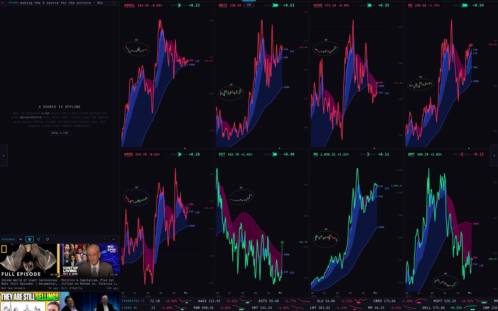
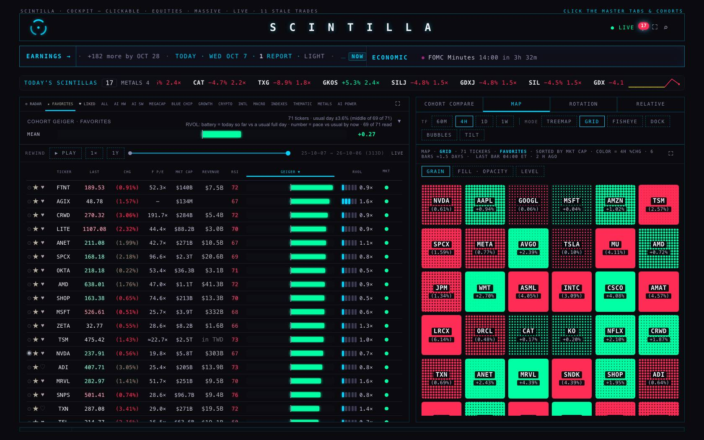
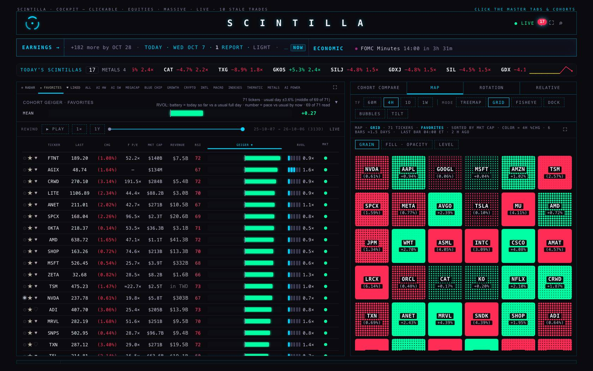
PHONE WIDTH (390) AND FRAMES FROM THE RUNS
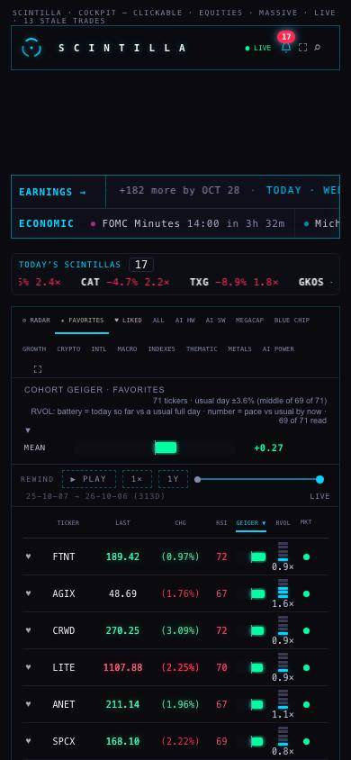
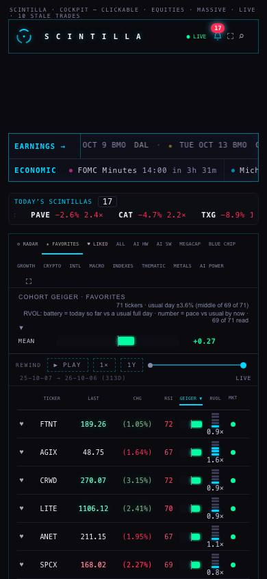
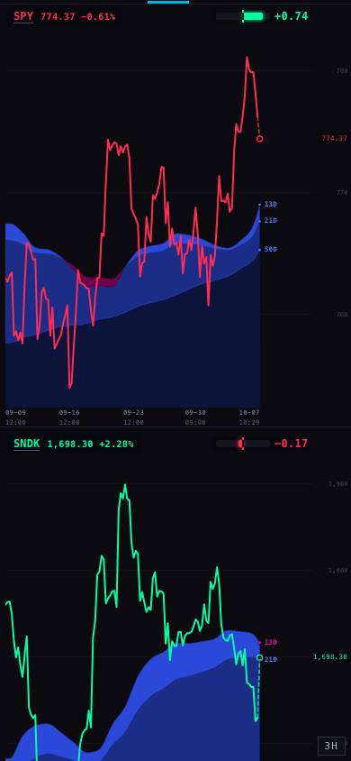
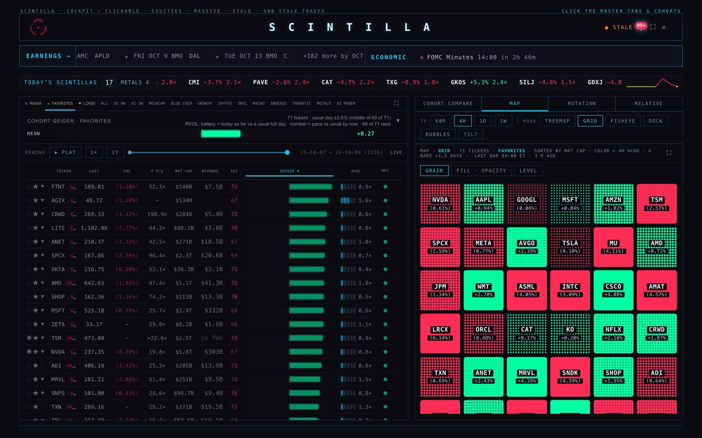
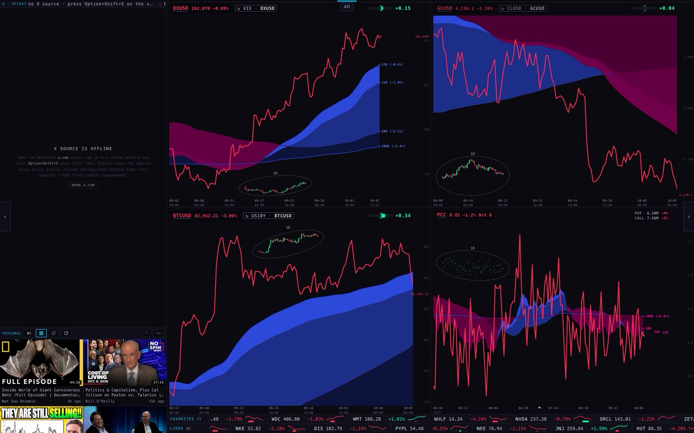
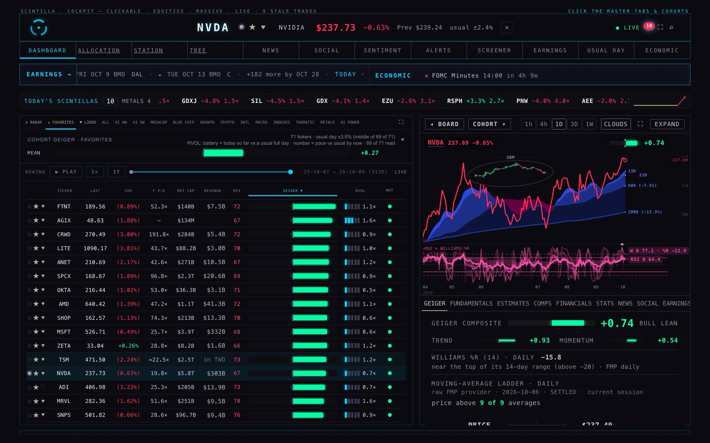
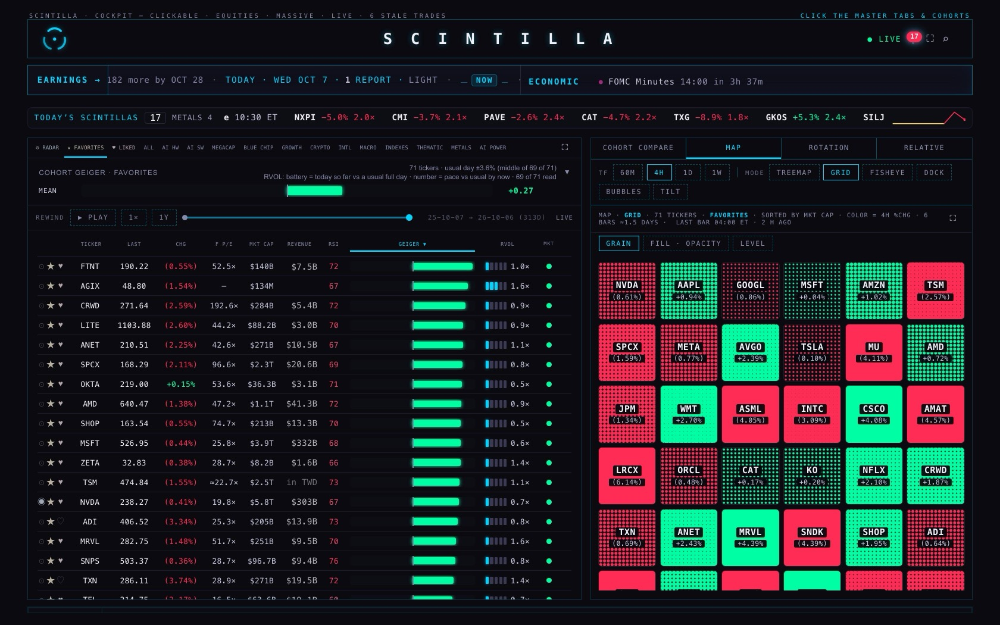
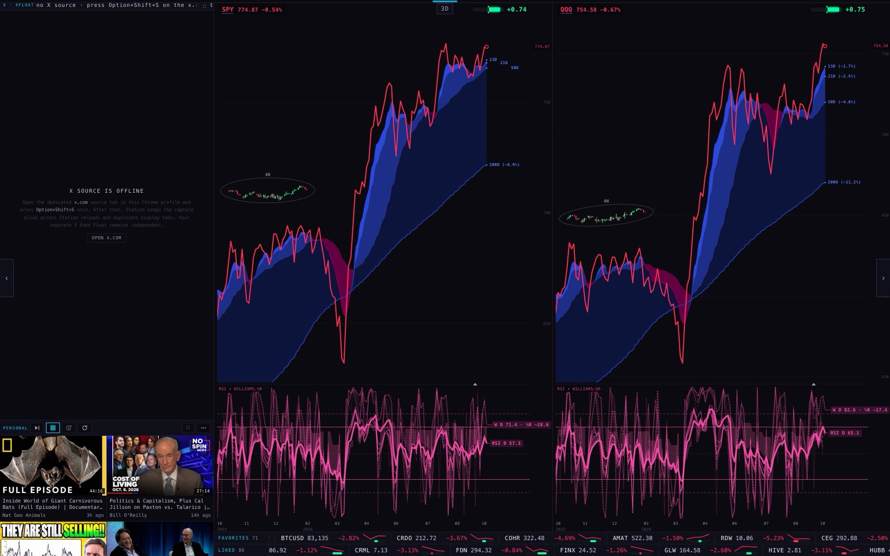
The night reload — the stopgap
Alan: "at least a calendar of overnight quitting and restarting would be nice — but for the Station that means opening the Station in the Brave PWA, X in the Brave PWA, executing the extension in the X PWA." A browser gathers some weight of its own over days whatever a page does (and the video player's memory is YouTube's, not ours to fix). So both pages now do the quit-and-reopen for themselves, and neither needs the X steps: only the Hub page or the Station page loads again. The X window and its extension are never touched — the extension keeps the picture and the Station's new X pane takes it back by itself, exactly as after every release.
| The Hub | The Station | |
|---|---|---|
| When | Between 3 and 5 in the morning, by that computer's clock, if the page has been open four hours or more. Once a night: a page that has just loaded is not four hours old. A Mac that slept through its night gets it at the next quiet moment once the page is thirty hours old. | |
| Only if | Nobody has touched the page for two minutes, no video is playing, nobody is typing — the same rule that already decides when the Hub may load a new release. And the server must have just answered, so it can never reload into an error page. | Nobody has touched the Station or any pane for two minutes, no video is on the stage, and a live X picture has had its 30 minutes — the same rule that already decides when the Station may load a new release. And the server must have just answered. |
| It waits while | The Hub's own video player is open, a section or the browser is full screen, or a panel is open over the page (the bell, a file, the chart pop-up, a menu). Proved: with the bell's panel open, 3 am came and went with no reload; once it was closed the page reloaded at the next check, once. | A video is open in a pane (playing or paused), the Station is in the browser's full screen, or a video is floating in its own window. Proved: in the browser's full screen, 3 am came and went with no reload; once out of it the page reloaded at the next check, once. |
| What comes back | The room and its sub-tab, the board's list, the company that was open (and EXPAND), and where each panel was scrolled to. Lists and stars live on the server; the company tab and the compare tab were remembered already. | The scene, the page, the timeframe, the chart count, the feeds and the lists were remembered already; the pane that was expanded and the place each video list was scrolled to are carried over. |
| Proved | Run end to end with no window, the page's clock moved from 22:00 to 03:10: it reloaded once, came back in the same room, on the same list, with the same company open and the board scrolled where it was; not again that night, not in the day, once the next night (9 of 9 checks). With ?nightreload=0: no reload. | Run end to end with no window, the page's clock moved from 22:00 to 03:10: it reloaded once, came back on the same scene, timeframe, chart count and feed, with the expanded chart expanded again, the video list scrolled where it was and the X pane mounted again; not again that night, not in the day, once the next night (10 of 10 checks). With ?nightreload=0: no reload. |
| Switch it off | Open the Hub once at scintillahub.ai/?nightreload=0 — that browser remembers it. ?nightreload=1 turns it back on. For every browser at once: HUB_NIGHT_RELOAD_DEFAULT_ON = false in index.html. | Open the Station once at station.scintillahub.ai/?nightreload=0 — that browser remembers it. ?nightreload=1 turns it back on. For every browser at once: NIGHT_RELOAD_DEFAULT_ON = false in deck/index.html. |
On each branch the stopgap is in its own commits, after the fixes, so the fixes can ship with or without it.
What could be wrong
- The iMac was not measured. The lanes do not touch it. Everything here is the MacBook's test browser at 1680 × 1050 on a retina screen. The Station's picture copies scale with the screen, so the iMac's saving should be larger than the one shown; the Hub's sound channels do not depend on the screen at all.
- The X picture and a playing video were not in the test. The X pane needs Alan's own X window and the extension, and the test browser refuses every request that is not a plain read, which also stops YouTube from playing. The Station was measured with its X pane waiting ("X SOURCE IS OFFLINE") and its video list showing but not playing. The X pane's code was read line by line instead: its picture frames are closed after each paint and nothing was found that piles up. What a video player gathers over a day is not known from this test — that is the main thing the night reload is for.
- "Process memory" includes the measuring tool. The test browser keeps its own log of every request the page makes, in the same process, in both runs. So that row rises a little in both; the before and after are still a fair pair. The other rows are the page's own.
- The "after" runs are 50 minutes, and the last 25 minutes of every run had no live quotes (see "What went wrong during the test"). The two Hub leaks are steady rates (so many an hour) and show plainly in that time; a full 90-minute "after" run is still owed.
- 90 minutes is not a week. Something that only appears after days would not show here.
- The chime count depends on the news. The test browser reads Alan's FAVORITES from the server, so it chimed for his names at the real rate for that hour of that day.
What was not done
- Nothing is deployed. Two branches are pushed for the coordinator: Hub
hub/rm1-memory-20261007(code atcc65930) and Stationstation/rm1-memory-20261007(code ate577fd7); this report and its data are the commit after each. - The Station's shared store of price history was left as it is. It is the largest thing the Station's own code holds (21.5 MB after 25 minutes) but it empties itself every half hour by design and has a ceiling, so it rises and falls rather than grows.
- Parked charts still keep their drawing surfaces. Letting those go while parked would save more on a large screen, but it touches how smoothly a chart fades in, so it needs eyes on the wall first.
- The night reload does not keep a typed search, and it does not put a full-screen section back: it waits instead while one is up, so a Hub left full screen for days is not reloaded at night (the leaks themselves are fixed either way).
PAGE SPECS
How each page was measured. Headless Chromium on the MacBook, 1680 × 1050 at retina scale, New York time, one browser per page. The page is loaded, left 2 minutes to settle, then read every 5 minutes (before: 90 minutes for the Hub and the Station, 85 for the Hub with a company open; after: 50 minutes each): the JS heap after a forced clean-up, the raw buffers, every node the browser is keeping (and those kept off the page), event listeners, repeating and one-shot timers (counted where they are created, by code line), canvases and their pixels, documents, open sockets, requests, and the memory and threads of the whole test browser. A full picture of the page's memory is taken at the start and the end and compared object by object (the runs that were stopped early have a start picture only).
Before and after are the same test. "Before" is the live address as deployed (Hub b80c01e, Station b859b30 — checked byte for byte against the branch points). "After" is the same live address, with only the changed files answered from the branch (Hub 780a3cb index.html; Station afecf96 deck/index.html and the two lens files), so every number still comes from the live services. The commits made after those two only touch the night reload (what it waits for, what it keeps), which a soak does not exercise; they were proved by the night-reload runs instead. The after runs started 39 minutes after the before runs, in the same session, and overlapped them — which is what overloaded the price service.
Kept safe. Every request that is not a plain read was refused and counted, so nothing could be saved or written (the two runs that ran to their end: 217 HEAD to our own pages (the version check); 13 POST to YouTube and Google (the video player)). The live sockets carried only joins and heartbeats. No key was printed or stored.
Chart colours. Red is before, green is after — the house's two direction colours, stepped until the colour-blind check passed on this panel (before #CC1F44, after #1DAD7B). Every chart also names its lines at their ends, and every number is in the table view under it.
Tests. Hub: node --test tests/ — live b80c01e: 1,999 tests, 7 failing names; this branch: 2,028 tests, the same 7 failing names, none new. 29 new tests: tests/hub-rm1-memory.test.mjs (11) and tests/hub-rm1-night-reload.test.mjs (18).. Station: node --test at the repo root — live b859b30: 1,095 tests, 27 failing; this branch: 1,108 tests, the same 27 failing, none new. 13 new tests: tests/station-rm1-memory-20261007.test.mjs (3) and tests/station-rm1-night-reload-20261007.test.mjs (10)..
Files. Tools in tools/ (the soak, the lap test, the heap comparers, the sound-channel experiment, the night-reload run on a moved clock); every reading in data/.